Tijolo, Bloco e Cobogó Direto da Fábrica em Aquiraz
Estoque pronto pra entrega em 24h em todo Ceará. Economize até 15% na sua obra.
Pedir Cotação no WhatsAppEstoque Pronto pra Entrega Imediata
Tijolos 8 Furos, Estrutural e Cobogó Conceito. Direto da fábrica.
Linha Destaque: Entrega em 24h
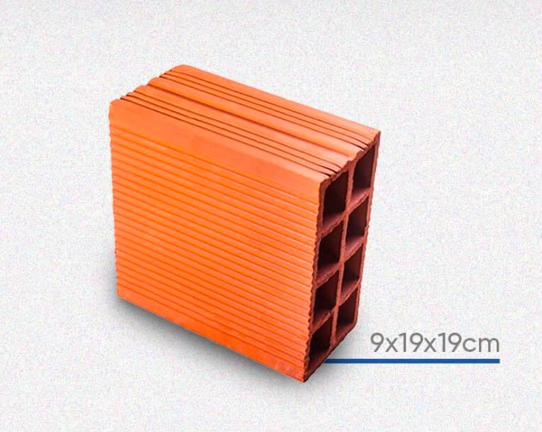
Tijolo 8 Furos ECONÔMICO
O mais vendido do Ceará. Economiza até 15% de argamassa.
Pedir Cotação no WhatsApp →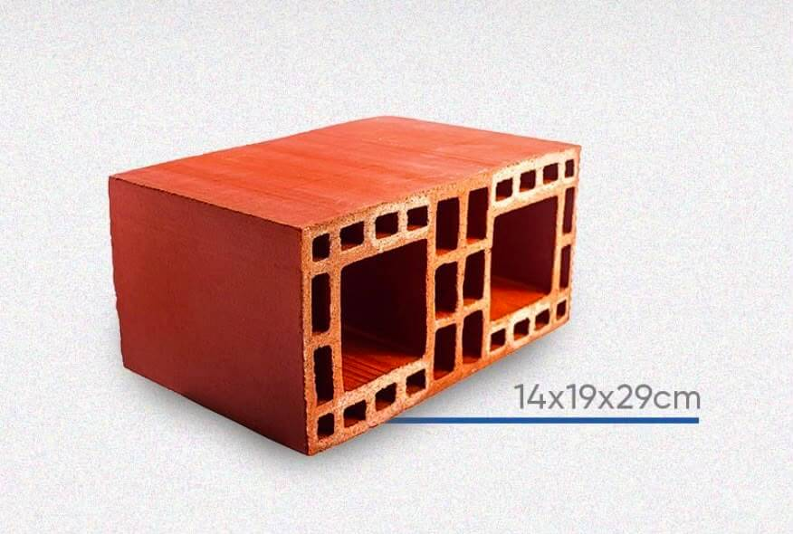
Bloco Estrutural RÁPIDO
Obra 30% mais rápida. Dispensa pilares em até 3 andares.
Pedir Cotação no WhatsApp →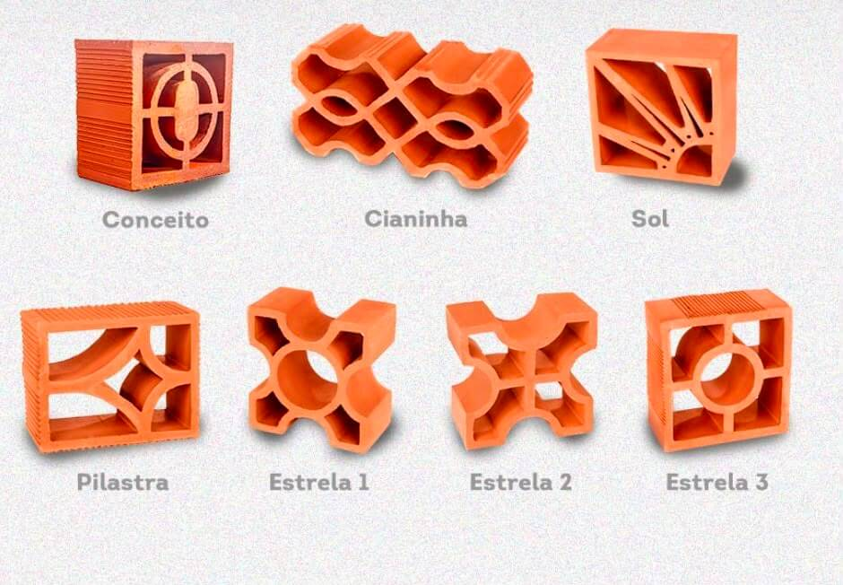
Elemento Modular Cobogó
Peças com desenhos decorativos. Possibilitam passagem de luz e ventilação natural.
Pedir Cotação no WhatsApp →Linha Complementar
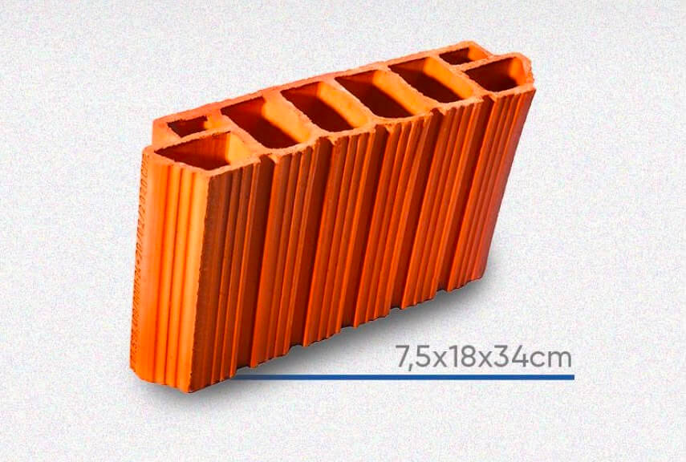
Tijolo H8 RESISTENTE
Laje 25% mais leve. Alto isolamento térmico.
Pedir Cotação no WhatsApp →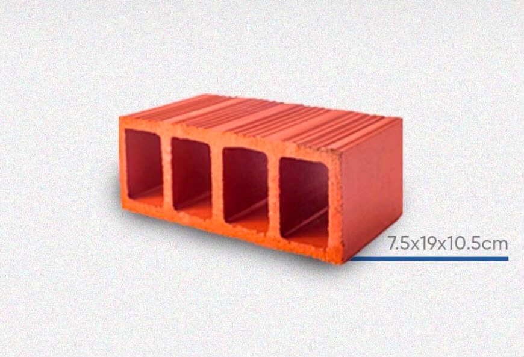
Meio Tijolo Aparente
Acabamento perfeito nas quinas. Zero desperdício.
Pedir Cotação no WhatsApp →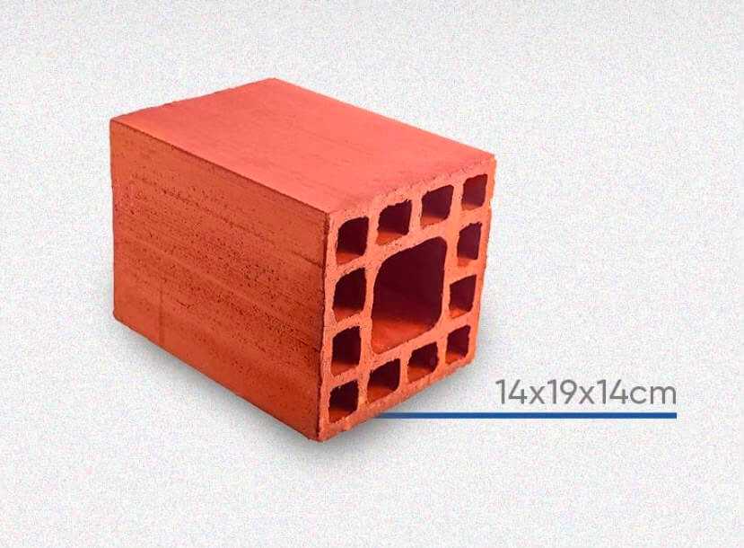
Meio Bloco ESTRUTURAL
Acabamento perfeito. Dispensa a quebra manual.
Pedir Cotação no WhatsApp →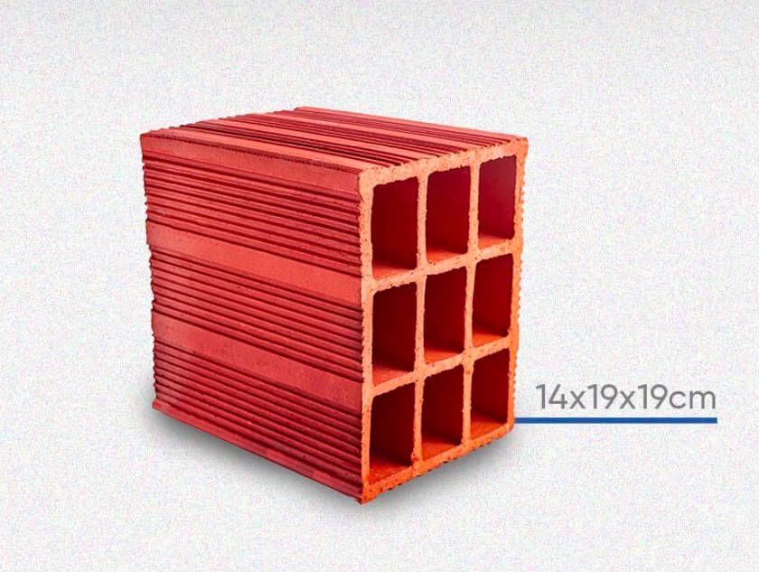
Tijolo 9 Furos
Maior resistência e ideal para uso em imóveis geminados.
Pedir Cotação no WhatsApp →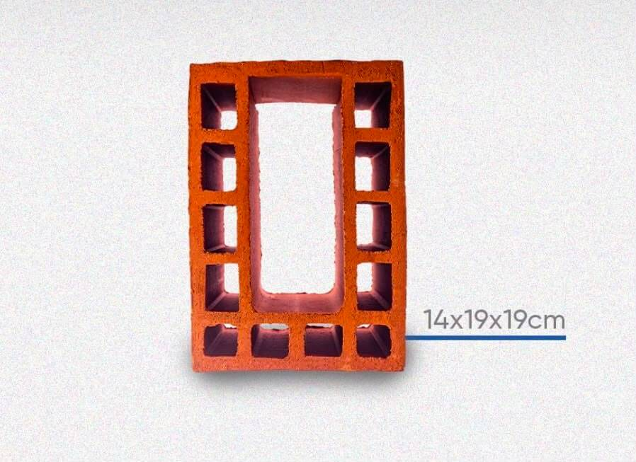
Canaleta ou Calha
Ideal para construção de vigas, preenchimento com concreto.
Pedir Cotação no WhatsApp →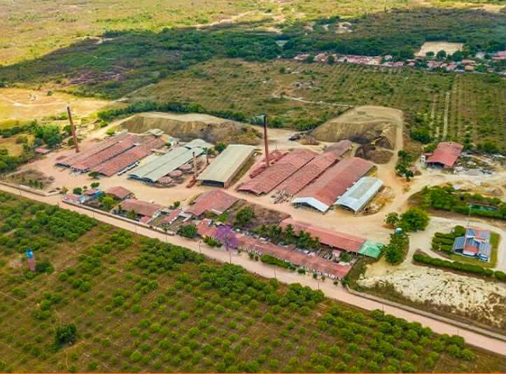
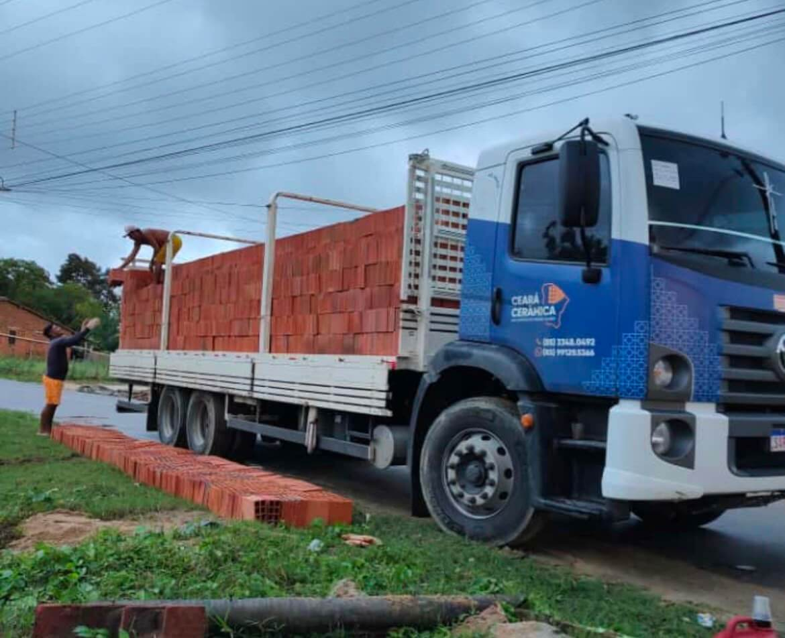
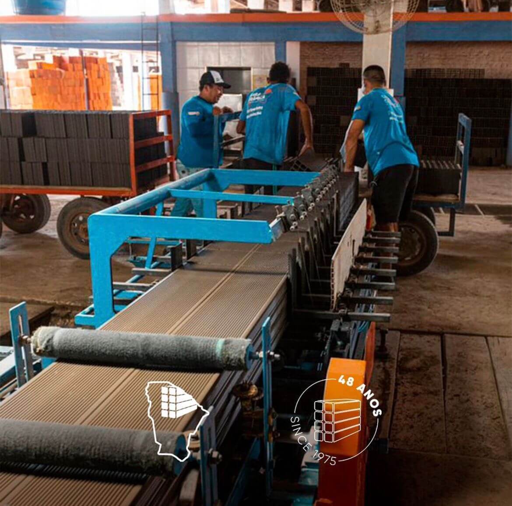
CEARÁ CERÂMICA
- Grupo Tavares: 50 Anos de Fábrica
Própria
Estrutura própria em Aquiraz-CE desde 1970. Do barro ao palete, tudo aqui dentro.
Recuse Imitações! O Verdadeiro Tijolo Ceará Tem o Nome Impresso.
Falar com ConsultorDo Barro ao Tijolo
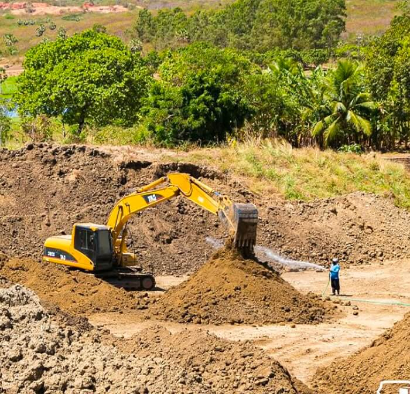
1. Extração
Barro nobre do sertão. Mais ferro = Tijolo mais vermelho e resistente.
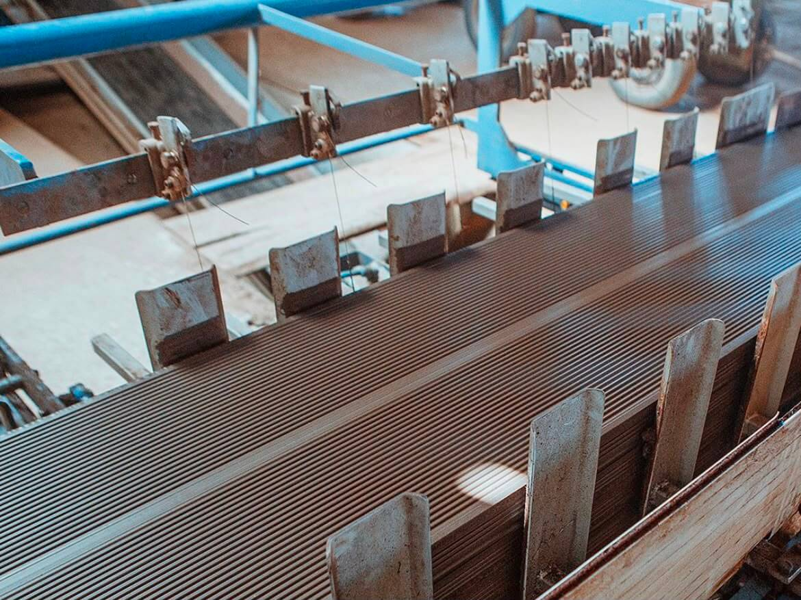
2. Moldagem
Prensas hidráulicas. Peça 100% igual, sem trinca e sem empenar.
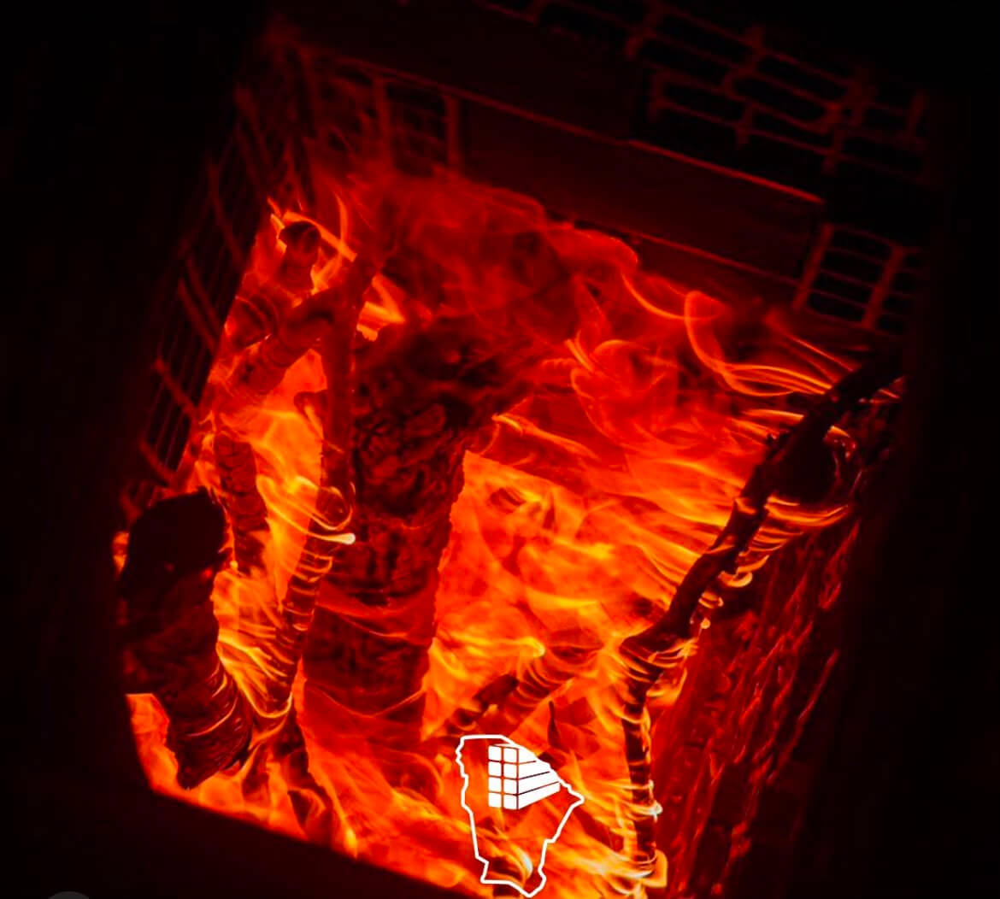
3. Queima
36h a 900°C. Isso dá a cor e a resistência pra durar 50 anos.
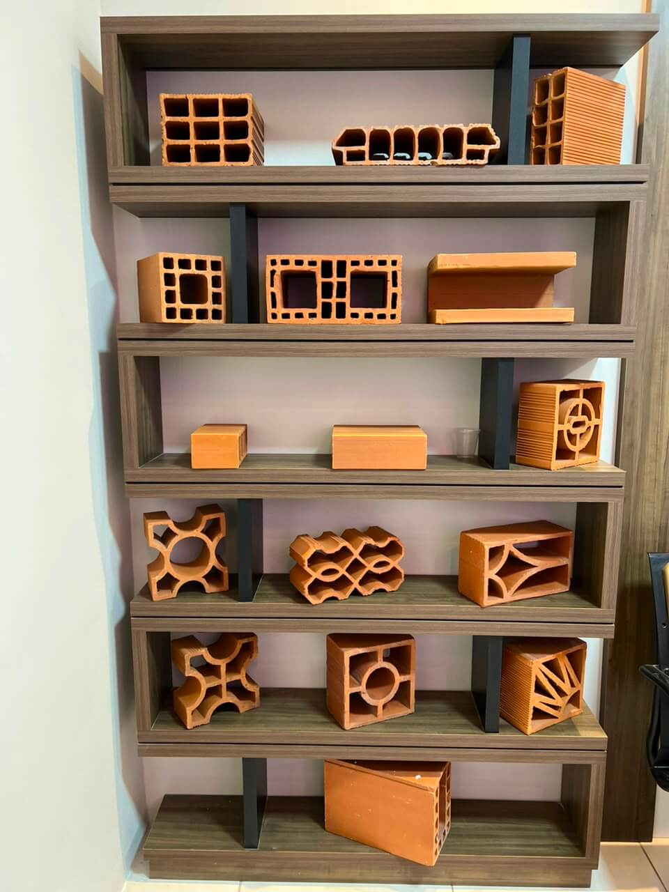
4. Qualidade
Estoque completo. Do 8 Furos ao Cobogó, tudo testado e pronto pra entrega.